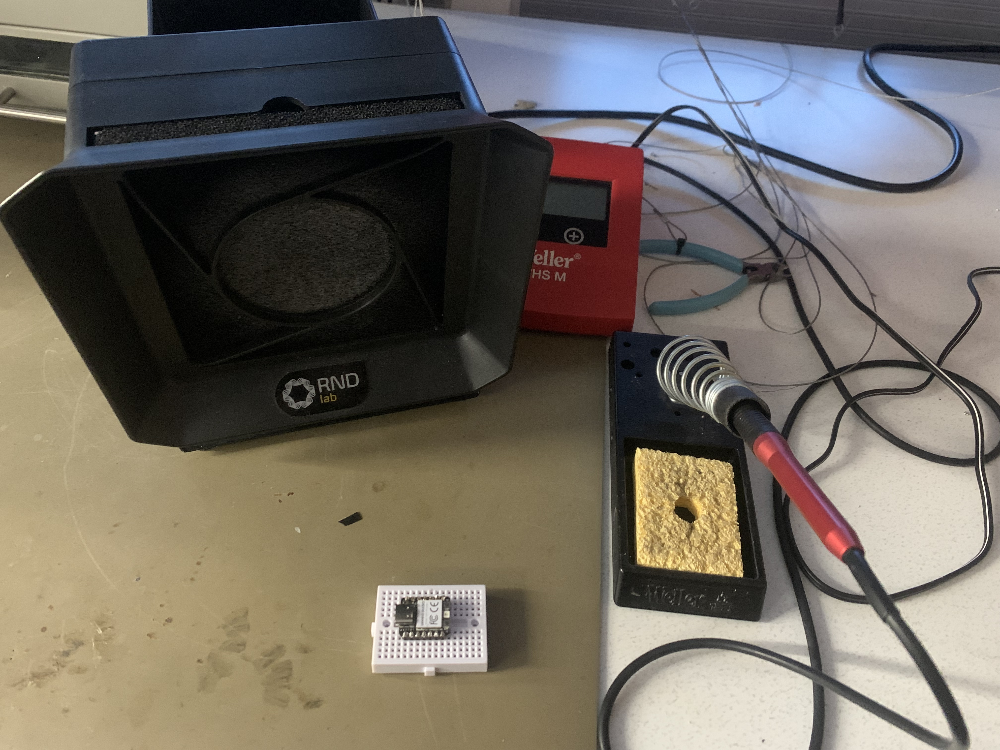
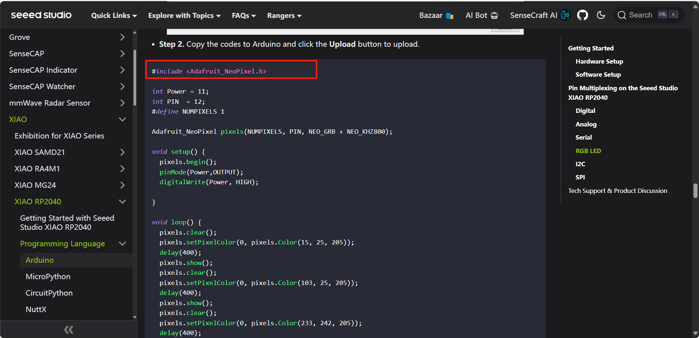

MCU
A microcontroller(MCU) is a small, low-cost computer integrated into a single chip, designed to control electronic devices. It consists of a processor(CPU), memory(RAM and flash storage), and input/output peripherals(e.g., GPIP pins, timers, and communication interfaces). MCUs are commonly used in embedded systems, where they provide specific functionality for various applications.
Microcontroller can be used in creating robotics, home automation systems, wearables, sensors, and IoT devices. With an MCU, you can control motors, reader sensors, process data, and communicate with other devices. Popular examples include Arduino, Raspberry Pi Pico, and ESP32.
Electronic concept
Voltage, current, and resistance are fundamental concepts in electronics, often described by Ohm's law.
Voltage(V) is the electric potential difference between two points. It is the force that pushes electric charges to move in a circuit, measured in volts(V).
Current(I) is the flow of electric charges(usually electrons) through a conductor, such as a wire. It is measures in amperes(A).
Resistence(R) is the opposition to teh flow of current in a circuit, caused br materials or components like resistor. It is measured in ohms (Ω).
These three quantities are related by Ohm's law, which states: V = I * R.
XIAO board
When soldering the pins onto the XIAO board, the tools you will need include a soldering iron, solder wire, a damp sponge for cleaning the soldering iron, and possibly safety goggles. Make sure the soldering iron has heated up to the appropriate temperature (around 350°C) before starting. Place the pins on the board, ensuring they are aligned, and then simultaneously heat the pins and the pads on the board. After that, apply the solder. Avoid touching the hot tip of the soldering iron, and use tweezers or pliers to hold the board while working to prevent burns. For safety, we need to work in a well-ventilated area or use a smoke extractor to avoid inhaling harmful gases. Keep the soldering iron away from flammable materials, and ensure the work surface is clean and stable. Once finished, wait for the board to cool down before handling it.
Arduino
#define is used to define constants or macros that can be used throughout the code. For exampple, #define LED_PIN 13 assigns pin 13 to the constant LED_PIN.
setup() runs once since the Arduino resets or starts. It is used to initialize settings, such as setting pin modes or starting serial communication.
loop() runs repeatedly. It contains the main code that needs to run over and over, like reading sensors or controlling outputs.
pinMode() sets the mode of a pin, either as an input or outout. For example, pinMode(LED_PIN, OUTPUT) set the pin as an output.
digitalWrite() can writes a HIGH or LOW value to a pin, used to control outputs like LEDs.
Variables: Arduino supports different types like int, float, and char to store data.
if...else: These conditional statements allow the code to make decisions. For example, if (condition) {} runs a block if true, otherwise, else {} runs.
NEOPIXEL
I learned how to start Seeed XIAO RP2040 here (connect/ install/ choose the board and port). Then I use example in this website to apply the library.
The Adafruit_NeoPixel object is initialized with the number of pixels, the pin used, and the color format (NEO_GRB + NEO_KHZ800), which specifies the color order and communication speed. The setup() function initializes the NeoPixel and sets up the power pin to provide voltage to the LED. Inside the loop(), various colors are set for the NeoPixel with setPixelColor(), followed by a delay() to display each color for 400 milliseconds. The show() function sends the color data to the LED, and clear() resets it.